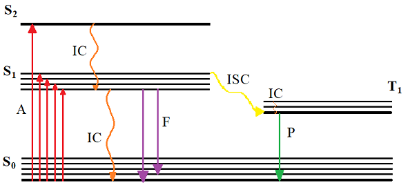
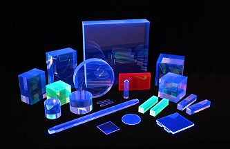
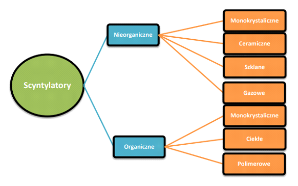
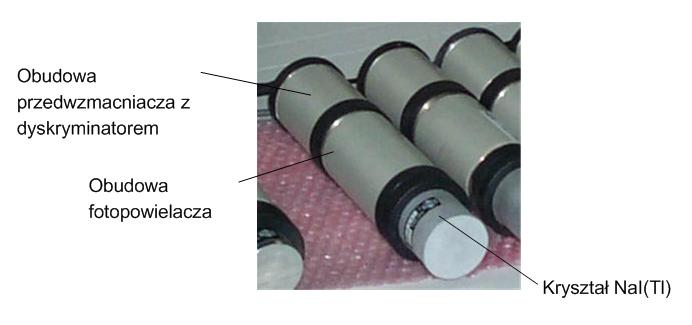
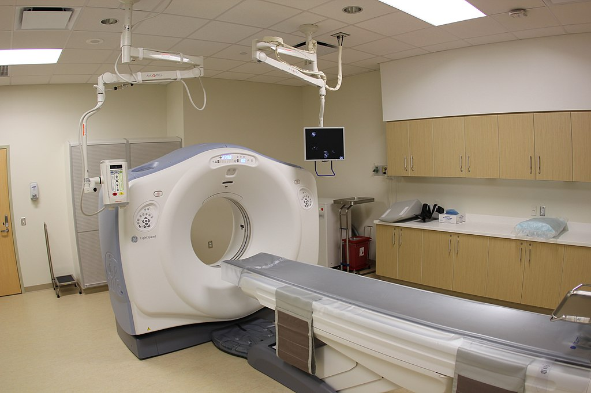
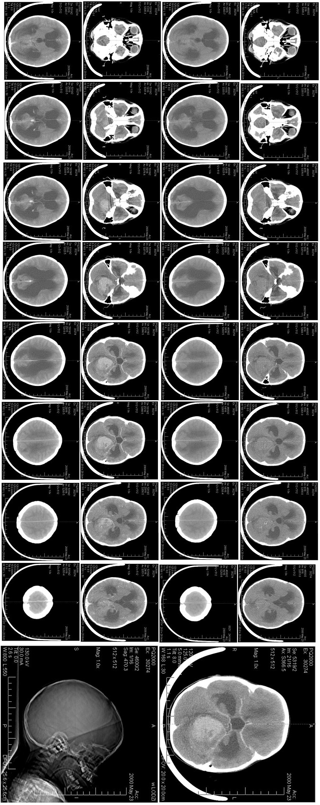
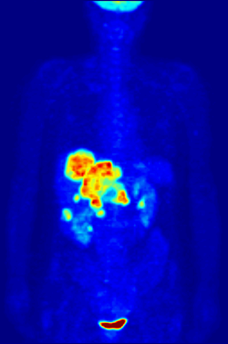

Your browser doesn't support the features required by impress.js,
so you are presented with a simplified version of this presentation.
For the best experience please use the latest Chrome,
Safari or Firefox browser.
Materiały
Scyntylacyjne
Marcin Klempka, Jakub Bąbelek
Materiały dla zaawanowanych technologii
Scyntylacja
Pod wpływem wysokoenergetycznego promieniowania jonizującego materiał scyntylacyjny zostaje wzbudzony. Wówczas
jego cząstki relaksują oddając część energii w procesach promienistych (luminescencja) – wypromieniowują
światło. Proces ten nazywany jest scyntylacją.

Scyntylatory
Materiały scyntylacyjne - przesuwają spektrum emisji z zakresu fal wysokoenergetycznych o długości fali
poniżej
1 nm, do zakresu ultrafioletu, widzialnego i podczerwieni. Pozwala to na detekcje bardzo krótkich fal.

Parametry scyntylatora
Czas zaniku sygnału świetlnego
Wydajność scyntylatora
Podział materiałów scyntylacyjnych

Zastosowania
- Detektory promieniowania
- Detektory cząstek (np. CERN)
- Diagnostyka medyczna:
- Tomografy komputerowa (CT)
- Pozytonowo emisyjne tomografy (PET)
- Tomografy komputerowe pojedynczych fotonów (SPECT)
- Obserwacja nowopowstających gwiazd
- Poszukiwanie surowców mineralnych
- Jako luminofor w starych telewizorach CRT
- Bezpieczeństwo:
- Alternatywa dla prześwietlania bagażu promieniami X na lotnisku
- Lokalizacja ładunku wybuchowego (np. pola minowe)
Licznik scyntylacyjny
detektor promieniowania jonizującego

Tomografia komputerowa
Rodzaj tomografii rentgenowskiej, metoda diagnostyczna pozwalająca na uzyskanie obrazów tomograficznych
(przekrojów) badanego obiektu.



Literatura
- Adam Strzałkowski. Wstęp do fizyki jądra atomowego. PWN, Warszawa, 1978.
- Plastic scintillators and fast pulse techniques. http://adweb.desy.de, Czerwiec 2014.
- Badanie właściwości detektorów scyntylacyjnych otoczonych lustrami pod kątem zastosowania w Pozytonowej
Emisyjnej Tomografii, Adam Ciesielski, Uniwersytet Jagielloński w Krakowie Wydział Fizyki, Astronomii i
Informatyki Stosowanej
- Synteza scyntylatorów polimerowych i ich badanie pod kątem zastosowania w obrazowaniu PET, Kamil Dulski,
praca licencjacka, Uniwersytet Jagielloński w Krakowie Wydział Fizyki, Astronomii i Informatyki Stosowanej
- Ł. Kapon „Plastic scintillators for positron emission tomography obtained by the bulkpolymerization method”,
Bio – Algorithms and Med – Systems 10 (2014) 27 – 31